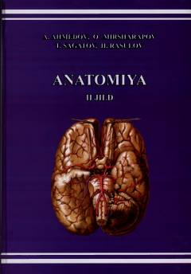

A2Tibbiyot talabalari uchun mo'ljallangan inson anatomiyasi bo'yicha ikkinchi jildli darslik.
Mazkur darslik tibbiyot OTMlari talabalari uchun mo'ljallangan bo'lib, ikkinchi jildida siydik-tanosil apparati, ichki sekretsiya bezlari, yurak-qon tomir va nerv tizimlari atroflicha yoritilgan. Kitobda a'zo va tizimlarning rivojlanishi hamda yoshga xos o'zgarishlari xalqaro anatomik terminologiyaga mos holda berilgan.